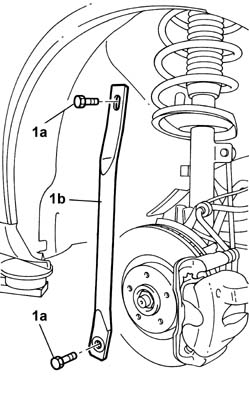
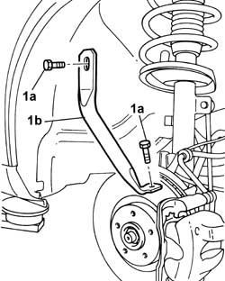
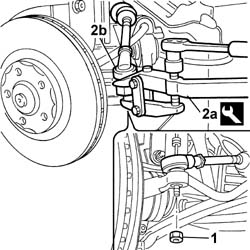
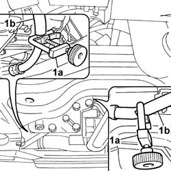
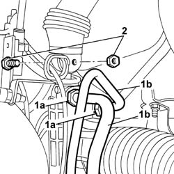
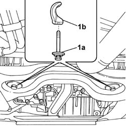
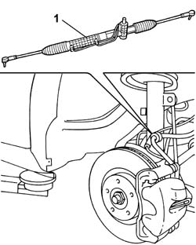

4130A10 POWER STEERING BOX - R+R
- Path
- Procedures > 41 STEERING UNIT > 4130 POWER STEERING > 4130A POWER STEERING BOX > 4130A10 POWER STEERING BOX - R+R
- Kind
- repair procedure (removal / refitting; the operation number is the code)
- Applies to
- all engines; all production periods
- Interactive page
- https://sloeber94.github.io/elrnDB-fUlss/en/#/179007355
Applies to: all engines; all production periods
 Removing
Removing
 Refitting
RefittingSee
Op. 7055B54 UNDER ENGINE PROTECTION/GUARD - R.R.
See
Op. 4130A14 POWER STEERING BOX COVER - R R
See
Op. 4450B12 FRONT WHEELS (TWO) - R+R
Work from the right side of the vehicle.
1. Undo bolts (1a) and remove connecting link (1b).

Applies to: all engines; all production periods
Working from the right side of the vehicle.
1. Undo bolts (1a) and remove connecting link (1b).

Applies to: all engines; all production periods
Carry out the same operation fon both sides.
1. Undo the steering head nut.
2. Use tool (2a) to release steering head (4b).
Description | Code | Function | |
|---|---|---|---|
2a | Head extractor | Ball joint removal |

Applies to: all engines; all production periods
1. Position terminals (1a) on the power steering fluid delivery and return pipes (1b).

Applies to: all engines; all production periods
Position a suitable container to recover the power steering fluid.
1. Undo connectors (1a) securing power steering pipes (1b) and move them out of the work area.
2. Undo the bolt securing the steering box to the steering column.

Applies to: all engines; all production periods
1. Undo power steering box bolts (1a) and recover fastening device (1b).

Applies to: all engines; all production periods
1. Remove the steering box from the right side of the vehicle.

Applies to: all engines; all production periods
Refitting
RemovingPlace the power steering box in position.
Screw in the power steering box fasteners to the beam and tighten to torque.
Value daNm | Fastening | Component | dia | |
|---|---|---|---|---|
. | 14.5 | Bolt | POWER STEERING BOX |
Tighten the low pressure pipe connectors (1a) and the high pressure pipe connectorss (1b) to to the specified torque.
Value daNm | Fastening | Component | dia | |
|---|---|---|---|---|
1b | 2,0 | Connector | HIGH PRESSURE PIPE |
Value daNm | Fastening | Component | dia | |
|---|---|---|---|---|
. | 2,5 | Bolt | UNIVERSAL JOINT |
Remove the terminals from the power steering fluid pipes.
Fit the steering heads and screw in the fixing bolt before tightening to torque.
Value daNm | Fastening | Component | dia | |
|---|---|---|---|---|
. | 4 | Nut | STEERING TRACK ROD ENDS |
Place the connecting links in position and screw in the bolts before tightening to torque.
Value daNm | Fastening | Component | dia | |
|---|---|---|---|---|
. | 6.5 | Bolt | LINK CONNECTING BODY TO SUSPENSION SUBFRAME |
See
Op. 4450B12 FRONT WHEELS (TWO) - R+R
See
Op. 4130A14 POWER STEERING BOX COVER - R R
See
Op. 7055B54 UNDER ENGINE PROTECTION/GUARD - R.R.
The power assisted steering system is self-bleeding; this is done by steering completely to the right and the left with the engine running and the vehicle stationary.